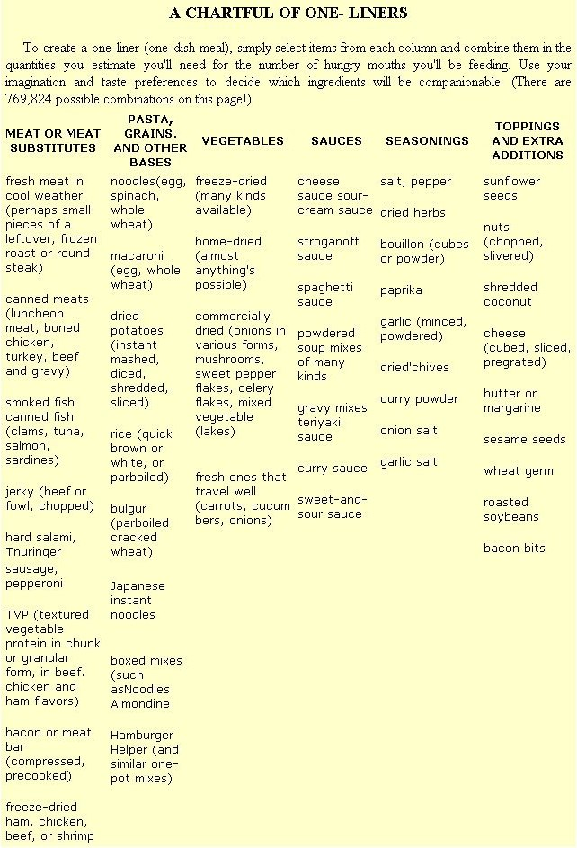

Here's the know-how you'll need to brew up delicious one-pot backpacking dinners.
When weary hikers pull into camp for the evening, delicious, hearty meals are in order. But unfortunately-because of weight limitations and the lack of kitchen facilities in the wild-such feasts are a bit harder to whip up on the trail than they would be at home. Consequently, particularly when on extended trips, camp cooks are often tempted either to repeat the same "old faithful" main dishes night after night or to resort exclusively to expensive freeze-dried fare.
However, you don't have to give in to either of those dubious "solutions" to the camp cooking problem. In fact, with just a little creative homework, you can save money, eliminate on-the-trail culinary boredom, and stamp out below-par nutrition. How? Easy . . . by putting together-in advance-simple but tasty "one-liner" main dishes that will have your camp ringing with praise for its ingenious chef.
THE ONE-LINER DEFINED
The one-liner is simply a pared-down, one-pot, main-dish recipe in which the specific amount of each ingredient can be as varied as the situation demands. To "build" a one-liner, you start with a basic list of elements: meats or meat substitutes . . . pastas or grains . . . vegetables . . . sauces . . . seasonings . . . toppings . . . and anything else that you know will tickle the taste buds of your traveling companions. While some such items might require a trip to a natural foods store, a deli, or a meat market, the majority of them should be available at most any supermarket.
Then again, though escaping the cost of a steady trail diet of freeze-dried foods is one of the advantages of one-liner meals, some of the handy dehydrated foods are certainly worth incorporating into your recipes (especially single-ingredient packages of vegetables and meats) . . . and you can find them at a growing number of outlets, including the specialty departments of some supermarkets. Or, if you venture into home food drying, you'll be able to add even more possibilities to your list of items. (Inexpensive home-dried tomato slices, for example, are a fantastic addition to many one-pot dishes.)
As I mentioned earlier, one-liner recipes do not state the exact amount of each ingredient to be used, but rely instead on each cook's preferences to balance the component parts. After all, you're the best judge of what-and how much of it-will satisfy the folks you'll be feeding. So all you really need from me is a starting point . . . in the form of some suggestions as to what might taste good with what, and a few tips on packaging and preparing your one-pot meals.
PREPARING YOUR TRAIL MEALS FOR PACKAGING
Resealable zip-locking plastic bags work best for storing and transporting main ingredients, while the smaller sandwich envelopes are useful for separate toppings and such. On each of the bags containing part of your one-liner meal, note-in as few words as possible-what ingredients it holds and how to prepare them. These instructions should be so clear and easy to follow that anyone in your group can be the cook if you're not around at mealtime.
Of course, before you start dumping things into bags, you'll need to determine the order in which you'll prepare the ingredients, so you'll know which components can be mixed together in one large bag and which need to be prepackaged in separate, smaller bags before being tossed into the larger sack.
For example, say you're putting together a quick meal of rice, vegetables, sour cream, soup, and TVP (textured vegetable protein, a meat substitute that comes in chunk or granular form in beef, chicken, and ham flavors). Instructions for the rice say to simmer it for eight minutes. The TVP needs to soak a few minutes, then cook for two or three minutes. Directions for the freezedried vegetables say to cover them with boiling water and then let them sit for five to ten minutes. The sour-cream mix also needs to stand awhile to thicken after being mixed with cold water.
Since the rice can simmer and the vegetables can be covered with boiling water all in one operation, these two (along with salt, if you use it) can go into the same bag. The TVP will have to go into a smaller one of its own. Then into a second small bag go the dry soup powder, sour-cream mix, and the required amount of dry milk.
After labeling the two smaller bags, tuck them both into the larger one, and then seal and label the whole package. Thus, with one quick grab, you can lay your hands on all the ingredients for the entire meal!
The next chore is to calculate the amount of water you'll need. For example, if the rice calls for 2 cups of water and the vegetables need 1 cup, you can compromise at 2-1/2 cups to start with . . . adding more toward the end if the mixture gets too thick or dry.
Also, be sure to include butter (or margarine), seasonings, and any other items called for on the packages of each of the ingredients (some can go right in with the maindish stuff, while others-like butter-will have to be packaged separately and added at mealtime).
Examine the cooking time required for every item in your one-dish meal, too, and extrapolate a reasonable compromise for the combined ingredients. Say, for instance, that you have noodles that need to boil for eight minutes and freeze-dried peas that have to simmer for five minutes. A good compromise would be to cook them together for seven minutes . . . then add the meat or meat substitute and instant soup mix and simmer the whole works for two or three minutes more.
LABEL IT!
You'll want to summarize all of the information about ingredients, cooking times, water, and order of preparation into simple, concise instructions for each package. To illustrate, on a sour-cream-and-soup sauce bag you might note "sauce + 1 c. water". And the smaller bag that contains the meat substitute might read "beef TVP: soak 5 min. in 1 c. water, add meat, cook 3 min., add sauce, cook 1 min.".
You'll find that-with a little practice-you can condense the several paragraphs of printed instructions that come on the ingredients' original packages into a few words.
And to display those abbreviated how-to's, just write your shorthand instructions on strips of freezer tape, using an indelible felttipped pen, then affix the labels to the packages. Use abbreviations wherever possible, but don't be so cryptic that an interpreter is needed when someone else decides to cook.
EXTRAS
If a nutrition-boosting topping (such as slivered nuts, coconut, Parmesan cheese, bacon bits, or sunflower seed kernels) is served with the dish, package it in a separate small bag. When cheese is called for, it's usually best to package it with the rest of the ingredients or to write "+ cheese" on the label . . . to help you remember to shave some of the solidified dairy product into the pot from a chunk stashed in your general food supplies.
And most one-liners are enhanced in both favor and nutrition if they're given a generous dose of butter, which can be stored in a separate container (such as a plastic cup with lid) and kept for long periods of time without refrigeration.
PLAN AHEAD
Look to the future when you're organizing your trail meals, and plan your dishes for the particular conditions you expect to encounter on any given trip. For example . . . on a desert hike where water will be limited, use a can of beef slices with gravy instead of beef TVP, which requires water to be reconstituted. With foresight, when stormy weather is likely to dictate a need to work fast, you can whip out the quick-cooking freeze-dried or canned foods you included for just such an occasion.
CAMP COOKING HINTS
In camp, the usual cooking procedure is to start boiling the dried vegetables while you're presoaking the meat substitute. That's because the vegetables need to be put into hot water at the beginning of the cooking process to insure that they'll have time for adequate rehydration. (And if you're using home -dried crops - which often are very hard - you may even want to presoak them for a few minutes before plopping them into the cooking pot.)
The second ingredient to place in the cooking water is the meat or meat substitute. Then, after the meat and vegetables have boiled a few minutes together, add the sauce mix and keep cooking until the brew thickens. Finally, add the toppings (if any) . . . and serve!
And, while you're feasting, you can also savor the thought that one-pot meals leave you with just a single cooking container - along with individual utensils - to wash!
THE ONE-LINER ... KING OF THE ROAD
You might want to practice assembling, packaging, labeling, and even preparing a few one-liners at home before loading a batch of them into your pack for a long trip. But once you do try this handy method of meal-planning, I'm certain that you, too, will be convinced that hikers, climbers, kayakers, bicyclists - virtually any outdoor folks who must travel light and go long stretches without access to refrigeration, running water, a store, or the conveniences of a modern kitchen - can benefit from this trail-wise method of assuring good nutrition and delicious dining . . . at purse-pleasing prices!
A BAKER'S DOZEN OF ONE-DISH MEALS
Here's a batch of field-tested one-liners, many adapted from recipes that I've long used at home ... a few taken from serving suggestions found on the package of one of the individual ingredients . . . and the remainder born as I sat at a huge table covered with dozens of food items suited to trail use, packaging meals for a six-week ski trip. In that last instance, the recipes seemed to invent themselves. . . since I was striving for variety and good nutrition, few combinations seemed too strange to at least try. With this approach, I ended up serving only two or three main dishes more than once during our six-week ski tour . . . and everyone agreed that the trail meals were never boring.
So look the following combinations over, try the ones that appeal to you, and improvise from there in order to determine the exact amounts of each ingredient you'll want to use (and to come up with other-entirety new-possibilities).
[1] Brown rice, bacon bits (or bacon-flavored soy bits), dried tomatoes, pepper and onion flakes, cheese sauce.
[2] Potatoes, meat bar (available from outdoor stores), dried vegetables, gravy mix.
[3] Bulgur, mixed dried vegetables, mushrooms, stroganoff sauce.
[4] Rice, dried pineapple, ham or chicken, sweet-and-sour sauce.
[5] Macaroni and cheese, tuna, mushrooms.
[6) Noodles, beef chunks or beef TVP (textured vegetable protein), vegetable flakes, butter, gravy mix.
[7] Rice, dried shrimp bits, slivered fresh carrots and summer squash, teriyaki sauce.
[8] Whole wheat macaroni, dried carrot/ mushroom/split-pea grits, oregano, garlic powder, grated Parmesan cheese.
[9] Oriental noodles, dried tomatoes and mushrooms, crumbled dried seaweed.
[10] Rice, tuna, curry sauce, peas, almonds, shredded coconut topping.
[11] Potatoes (dried or fresh), turkey bits, green beans, oregano, paprika, Swiss cheese.
[12] Spinach noodles, sliced salami, sour-cream mix, Parmesan cheese.
[13] Potatoes, ham (canned or TVP), corn, green pepper strips, white sauce.
EDITOR'S NOTE: ,7une Fleming is the author of four books and a multitude of articles that deal with wilderness recreation. Any day now, you'll have the opportunity to view her "Backcountry Kitchen" segments on television . . . since they're to be aired as part of the public television series The Great Outdoors (produced by WGBH-TV, Boston). In writing "A Potful of One-Liners" for MOTHER, Fleming drew material from her book The Well-Fed Backpacker (1981) . . . which you can order from Random House, Inc., Dept. TMEN, 400 Hahn Road, Westminster, Maryland 21157, Attention: Order Department. The cost is $3.95 for the book plus $1.00 postage and handling . . . for 111 pages in paperback.
And Mother's BookshelJ° (105 Stoney Mountain Road, Hendersonville, North Carolina 28791) has a book written especially for the bicycling cook . . . though it contains a wealth of information that should be of interest to just about any outdoor, awayfromhome chef. It's called Cycle Food: A Guide to Satisfying Your Inner Tube (no kidding!), and was written, illustrated, and hand-printed (not typeset) by Lauren Heffron in 1983. Cycle Food offers 92 pages between paperback covers and is quite an informative, entertaining read. You can order it (No. 63046) from Mother's Bookshelp for the cover price of $4.95 plus $1.25 postage and handling.
|
 |
|
|